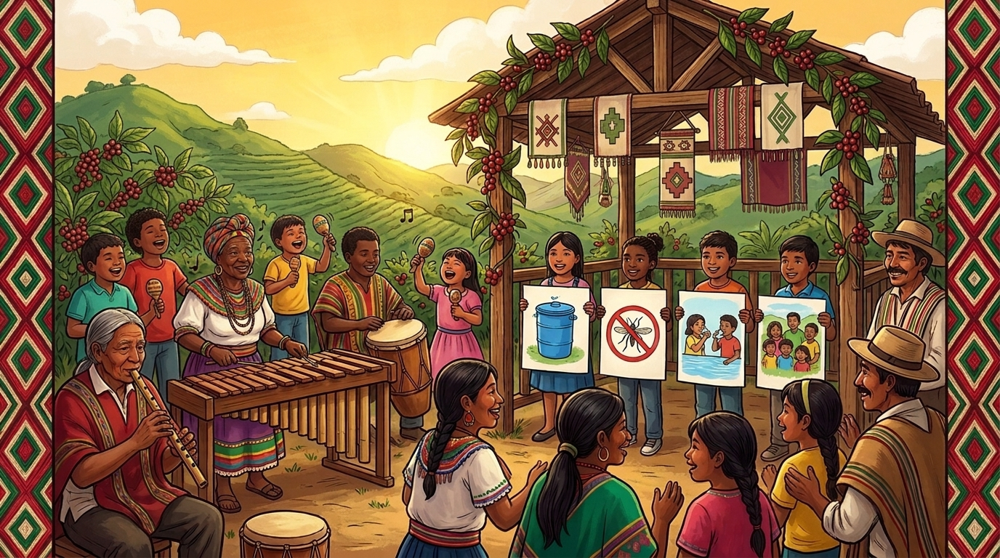
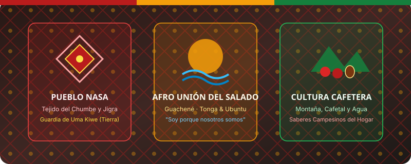

Módulo 3: Divulgación Comunitaria en Clave Ubuntu y Evaluación Formativa DUA
La ciencia que nace en la escuela regresa a las familias de Guachené y La Unión del Salado: transformamos nuestras conclusiones experimentales ($\bar{x}_{\text{plástico}} = 0.00\text{ cm}$) en coplas, infografías, ferias científicas, reportajes y pódcast, y evaluamos el proceso mediante una rúbrica formativa equitativa.

Fundamentación: Comunicación Científica Intercultural y Evaluación Equitativa
En coherencia con el Decreto 804 de 1995 (Atención Educativa para Grupos Étnicos en Colombia) y las Pautas DUA 5.1, 5.2 y 9.3 de CAST (2024), el conocimiento científico cobra sentido social cuando dialoga con la tradición oral, gráfica y comunitaria del territorio. Obligar a todo un grupo diverso a presentar un único examen escrito excluye talentos; por ello ofrecemos cinco canales multimodales equivalentes y una matriz de evaluación formativa.
La hoja 2_Rubrica_Evaluacion del prototipo Excel define $K = 6$ criterios integrales valorados en una escala ordinal $N_k \in \{1, 2, 3\}$ (donde $1 = \text{En Inicio}$, $2 = \text{En Proceso}$, $3 = \text{Logrado}$) junto con un factor de equidad $\delta_{\text{apoyo}} = 0$ que garantiza cero penalización por el uso de apoyos de accesibilidad (plantillas, macrotipo, audio o regletas táctiles):
$$I_{\text{DUA}} = \frac{1}{K}\sum_{k=1}^{6} N_k - \delta_{\text{apoyo}} = \frac{N_1 + N_2 + N_3 + N_4 + N_5 + N_6}{6} \in [1.00, 3.00]$$Cuando $I_{\text{DUA}} \ge 2.50$, el estudiante o equipo en Tonga alcanza el nivel Logrado con Excelencia Comunitaria; si $1.70 \le I_{\text{DUA}} < 2.50$, se encuentra En Proceso Consolidado; y si $I_{\text{DUA}} < 1.70$, recibe retroalimentación personalizada y andamiaje adicional.
Metáfora Conceptual: El Llamado del Tambor, el Tejido de la Palabra y el Convite
El Canto y la Copla Afrocaucana
En Guachené y La Unión del Salado, el verso rimado al compás de las palmas y el tambor hace que el mensaje preventivo se quede grabado en la memoria de niños y mayores: "Agua limpia bien tapada, deja a la zancuda derrotada".
La Palabra Pintada en el Chumbe
Quienes prefieren la expresión visual diseñan infografías y pictogramas inspirados en la geometría del Chumbe Nasa, mostrando con colores claros cómo el plástico ($\bar{x} = 0\text{ cm}$) protege el agua de la casa.
La Radio Veredal y la Feria Cafetera
Como en los perifoneos y encuentros veredales de las fincas cafeteras, los equipos exponen sus prototipos de tapas y trampas caseras ante las familias invitadas.

Estudio Creativo Multimodal y Calculadora de Rúbrica Formativa DUA
A. Estudio Creativo Multimodal y Generador de Coplas en Tonga
Selecciona uno de los 5 canales de expresión DUA contemplados en la planeación, elige la raíz cultural que deseas destacar, incorpora el saber de tu familia y genera tu pieza comunicativa (puedes acompañarla con un pulso rítmico generado en vivo con Web Audio API):
1. Alerta Epidemiológica (Verso & Vector)
2. Copla Científica Generada (Semilla #1)
3. Evidencia Cuantitativa de la Tonga
4. Saber Familiar Integrado en Casa
B. Calculadora Interactiva de Rúbrica Formativa DUA (6 Criterios $\times$ 3 Niveles)
Evalúa el desempeño integral en las 3 sesiones seleccionando el nivel alcanzado en cada uno de los 6 criterios oficiales de la hoja Excel (2_Rubrica_Evaluacion). Verifica cómo el uso de apoyos DUA mantiene la equidad evaluativa:
Matriz Completa de Descriptores de la Rúbrica DUA (Hoja 2 del Excel)
| Criterio Evaluado | Nivel 1: En Inicio ($1\text{ pto}$) | Nivel 2: En Proceso ($2\text{ ptos}$) | Nivel 3: Logrado ($3\text{ ptos}$) |
|---|---|---|---|
| 1. Ciclo Vectorial | Nombra el zancudo pero no lo asocia con depósitos de agua limpia. | Identifica el criadero y la picadura con apoyo de imágenes o pares. | Explica la secuencia completa criadero $\rightarrow$ vector $\rightarrow$ comunidad. |
| 2. Experimentación | Participa en el montaje pero requiere guía constante para medir. | Mide el ascenso capilar en las tiras y anota datos en las celdas azules. | Compara con precisión las 3 repeticiones y utiliza el promedio $\bar{x}$ como prueba. |
| 3. Solución Ingeniería | Propone cubiertas porosas sin considerar los datos del laboratorio. | Elige el plástico impermeable pero olvida el sellado del borde. | Diseña una cubierta impermeable y hermética o trampa funcional. |
| 4. Divulgación DUA | Presenta una idea fragmentada en el canal seleccionado. | Comunica cómo tapar el agua usando su canal elegido (copla, cartel, audio). | Integra datos del experimento y saberes culturales en un mensaje persuasivo. |
| 5. Trabajo en Tonga | Trabaja de forma aislada o interrumpe la participación de otros. | Asume su rol asignado dentro del grupo respetando acuerdos básicos. | Practica el principio Ubuntu cuidando que todos aporten desde sus fortalezas. |
| 6. Vínculo Familiar | Aún no conecta las actividades escolares con las prácticas de su casa. | Trae la respuesta de su familia sobre cómo tapan los recipientes. | Lleva el compromiso preventivo de regreso a su hogar y vereda. |
Bitácora Familiar e Instrumentos Imprimibles de Evaluación
Descarga las cartillas oficiales en PDF correspondientes a la Sesión 3 y a la gestión docente de evaluación formativa:
Guía 03: Divulgación Familiar y Coplas
Incluye la Bitácora Familiar (Hoja 3 del Excel), plantillas para componer coplas afrocaucanas, esquema de infografía con grecas del Chumbe Nasa y acta de compromiso comunitario en casa.
Descargar Guía 03 (PDF)Guía 04: Rúbrica Formativa DUA Docente
Instrumento imprimible para el profesorado con la matriz de $6\text{ criterios} \times 3\text{ niveles}$, lista de chequeo de accesibilidad DUA y orientaciones de retroalimentación multigrado ($1.^\circ$ a $5.^\circ$).
Descargar Guía 04 Docente (PDF)Cierre del Proyecto: Nuestro Pacto Comunitario por la Vida
Juramento Escolar en Tonga y Minga
"Porque en Guachené, en La Unión del Salado, en el resguardo y en la finca cafetera la salud de uno es la salud de todos: revisamos juntos nuestros patios, cepillamos las albercas, tapamos el agua limpia con material impermeable y tejemos saberes entre la familia y la escuela."